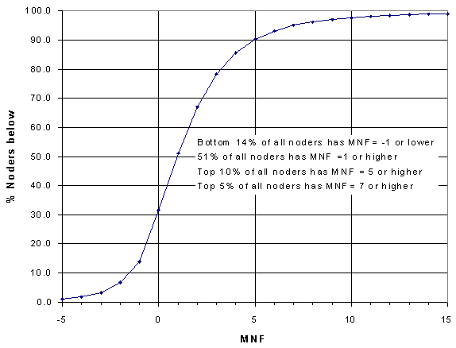
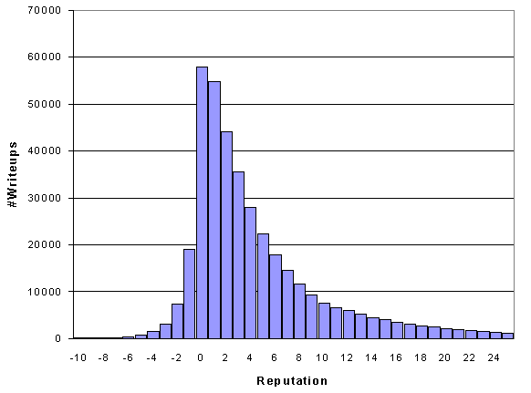

Node Reputation Statistics
Now that we mapped out what Level noders are in, how much they node, and
what XP they gain for doing so it is time to look at some general statistics
on writeup reputation. There are several methods to quantify an average
writeup quality (such as Simple Node-Fu, Writeup Node-Fu, Ching-Fu). This
analysis will make use of the Median Node-Fu
(MNF), since it is unbiased towards outliers with respect to writeup
reputation. It is beyond the scope of this analysis to describe why the
median is a better measure of central tendency for writeup reputations than the
mean (as used in WNF), but this writeup
has some more information on the issue.
I calculated the Median Node-Fu for each individual noder with one or
more writeups. This data can be seen in the following histogram:
 The mean value for the MNF data is 1.93, which indicates that most of the
noders score a Median Node-Fu=2, approximately. However, this distribution
is fairly broad, as indicated by the Standard
Deviation = 3.89. The histogram outline is more or less symmetric,
although it has a broader tail on the high end. This is somewhat understandable,
since noders who consistently score low reputations on E2 are not likely
to stick around for very long (and as a result eventually lose all their
writeups if they prove to be sub-par). I also calculated the average
reputations for each noder. The histogram showed less symmetry as was
expected, and is somewhat biased towards higher values (Mean = 2.93, Standard
deviation = 4.46).
The mean value for the MNF data is 1.93, which indicates that most of the
noders score a Median Node-Fu=2, approximately. However, this distribution
is fairly broad, as indicated by the Standard
Deviation = 3.89. The histogram outline is more or less symmetric,
although it has a broader tail on the high end. This is somewhat understandable,
since noders who consistently score low reputations on E2 are not likely
to stick around for very long (and as a result eventually lose all their
writeups if they prove to be sub-par). I also calculated the average
reputations for each noder. The histogram showed less symmetry as was
expected, and is somewhat biased towards higher values (Mean = 2.93, Standard
deviation = 4.46).
An alternative method of plotting this data is in cumulative
form. This can be seen in the following plot:

From this plot, you can calculate how your writeup reputations compare
to those of all the other noders. For instance, if you have a Median
Node-Fu=3, look in the table and you see that 78% of all the noders have
a lower MNF than you (i.e. you're in the top 22%).
If we look at the reputation of all nodes, of all noders
combined we obtain the following histogram:

The histogram shows an overwhelming number of writeups with a
reputation=0--1, with a long tail towards the higher end of the
distribution. Below reputation=0, the number of writeups drops rapidly
to very low figures:
The voting system effectively weeds out the junk.
Let's put some numbers on this conclusion. Of the approximately
390,000 writeups in the database (and we're not counting Webster 1913)
- only 1723 writeups have a reputation of -5 or lower. This is 0.4% of
all the user writeups.
- only 208 writeups have a reputation of -10 or lower. This is 0.1% of
all the user writeups.
Median Node-Fu Product
Another statistic to measure a noder's progress is the Median
Node-Fu Product (MNFP). This ranks a noder by the quality of his/her
contributions (Median Node-Fu), and the quantity (number of writeups):
MNFP = (MNF+1) x (#writeups)
Again, this is not the place to completely describe this parameter, so
I suggest you read the Median Node-Fu Product
writeup. The MNFP is basically another method of ranking all the noders
in the database, similar to the EBU ranking, except that it is solely based
on the noder's writeup quality and quantity. Similar to the
XP/#writeups plot on the previous page, we can
plot the MNFP as a function of the number of writeups for all the noder
levels. This can be seen in the following plot:

The data represents what the average noder can expect for his/her MNFP.
Calculate your own MNFP using the aforementioned formula, look in the graph
for the number of writeups that you have, and see if your nodes are doing
better than the average. Alternatively, this ranking would be a pretty
neat method to base a level-advancement system on, since it is solely
based on writeup quantity and reputation (as opposed to the XP system).
The next section consists of some MNF and MNFP rankings of the noder
base.
Previous Page - Next Page
*** Professor Pi - October 1, 2001 ***